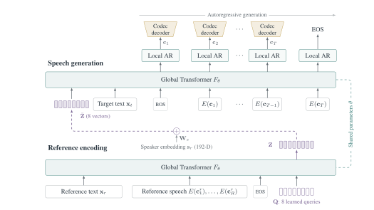
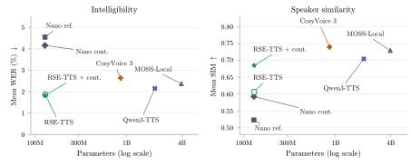

What feels comfortable
11.0sYeah, I used to think lighter meant faster, too. Then I tried it on a longer run and, honestly, I just felt tired. So now I'm a little more interested in what actually feels comfortable.
TEXT-TO-SPEECH · VOICE CLONING
Compact Text-to-Speech through Shared Text-Aware
Reference Encoding and Generation
VoxNexus
01 / THE PAPER
Can a speech generator also serve as an effective voice encoder? We show that a pretrained autoregressive text-to-speech (TTS) backbone can be repurposed for reference compression, improving speaker similarity in subsequent synthesis. Jointly encoding reference speech and its transcript further strengthens this capability. Controlled ablations and activation interventions trace the text benefit through intermediate acoustic representations into the compressed vectors that condition generation. Building on these findings, we introduce RSE-TTS, whose Reconstructive Speaker Encoder (RSE) shares the generation backbone and compresses paired reference text and speech into eight continuous vectors. Sharing reduces encoder–generator parameters by 48% relative to independent pretrained encoding. Large-scale English training yields a 118M-parameter generator that improves both word error rate and speaker similarity over the corresponding official MOSS-TTS-Nano cloning modes on all three English benchmarks. Combined with acoustic continuation, RSE-TTS approaches the speaker similarity of substantially larger systems while achieving lower WER than the evaluated CosyVoice 3 and MOSS-TTS-Local models.

02 / RESULTS
Speech accuracy and voice similarity,
at a fraction of the model size.

03 / CUSTOM VOICES
Explore expressive styles and four curated voices.
Conversations, storytelling, and expressive delivery.
Yeah, I used to think lighter meant faster, too. Then I tried it on a longer run and, honestly, I just felt tired. So now I'm a little more interested in what actually feels comfortable.
Wait, so do you make it fresh every time? I mean, that sounds great, but I'd probably get halfway through and just order a coffee instead. How do you actually keep up with it?
Whoa! Hello, everybody. It's me, Sunnywhisk. Thank you so much for watching this new sketch in, well, Christmas kind of theme. So let me know what is your opinion on Christmas and the holidays and everything. I can kind of guess it. That's kind of what this video was about, but I still want to know. Maybe you don't even celebrate Christmas. Tell me what do you think about all of these holiday kind of things. And if you're new here, I would love to have you subscribe. I post sketches like this on Wednesday and on a Saturday, I post stories or opinions or getting to know each other a little bit better videos like that.
Most people don't buy something bigger than a house, so it's it's important to care about your clients and care about doing good for them more so than just thinking it's going to be a quick, easy paycheck. Because that is definitely not how you could describe real estate.
Pretending is weakness. Growth begins with humility. Six, you play the long game. You value what's timeless, not what's trending. True intelligence isn't loud. It's grounded. It's calm. It's wise.
Picture sunlight streaming through terracotta-tiled walkways, illuminating verdant foliage and casting shifting shadows across rustic wooden beams. This is more than just a design statement; it's an invitation to experience a new way of living, where each corner offers a fresh perspective.
Did you notice the crowd at all while you were playing? Because from where I was sitting, it felt pretty loud. Or do you sort of switch all that off once the game starts?
I think obviously the amount of eyeballs, specifically the two games at US Bank Stadium, the Lakeville South game and the Edina game. You played great in both of those. That did you get a sense there were more people watching, not necessarily watching the football, they were watching you.
Next up is yellow eyes. Yellow is not the kind of color you would assume anyone's eyes to be, but despite what you may believe, yellow eyes are a real possibility and are very rare. Yellow eyes are often called tiger eyes, as tigers actually have yellow eyes. However, some humans have them too, and it's not a good thing. Those with yellow eyes sometimes actually have kidney problems. That's right, guys.
The end result of the effect is usually difficult to distinguish from the end result of tessellation. But the primary difference is that parallax occlusion does not add any additional geometry, nor is it able to affect the silhouette of the mesh. But it's usually much less resource intensive than tessellation. Tessellation is another big one. Red Dead Two has a tessellation quality option, which affects the quality and definition of ground mutations and deformities of things like snow and mud imprints.
This is the cliff line, and you can see after we dropped here, we had that magnificent day. The Nasdaq was up 10% or 12%. S P 500 was up 10% that day, but then it stopped, and then it kind of fell off a bit, and then it has retested.
Fuel Brindle is a voice and a resource for Iowa's fuel industry. Our members offer a diverse range of products, including fuel, grocery, and convenience items. They help keep Iowans on the move in rural and urban communities. Together, we fuel Brindle.
Four voices. US and UK accents.
04 / ZERO-SHOT VOICE CLONING
Listen to the reference, then compare RSE-TTS with and without continuation.
The second religion is known as Taoism or the Primitive religion.
It was later settled as a summer tourist and recreation area.
Back at Stadium mark he once again found himself on the bench.
The town is adjacent to and borders the city of Amsterdam on three sides.
Secondly, there is a difference between a major tone and a minor tone.
The butte's trail leads to a panoramic view from the historic fire lookout.
He studied the mammalian chronology of the European Eocene and Upper Miocene.
Youth Congress always remained in highlights of the leading state news.
Smith is too shocked by Paine's betrayal to defend himself, and runs away.
The nature reserve covers only a small part of the marsh area.
It is a hermaphroditic fluke that requires two intermediate hosts.
A live target missile launch was not planned for this flight test.
Through various illegal means, North Texas is awarded an expansion franchise.
It takes place at fictional Lincoln International Airport near Chicago, Illinois.
Carson greatly admired the talents of Hank Williams.
The labial palps finally funnel the food into the mouth, where digestion begins.
Institute studies all aspects of autism spectrum disorder.
Victor Hugo Emerson was the chief recording engineer at Columbia Records.
His name is the same as that of the ancient Egyptian god Amun.
They are perhaps most known for "The Quill" and the later "Professional Adventure Writer".
More visible enforcement of traffic regulations on motorists, bicyclists, and pedestrians has commenced.
The resulting wave interference pattern is the basis of diffraction analysis.
An obsessive need to control others is also associated with antisocial personality disorder.
Systems using artificial neural networks have been used to great effect.
One variation assigns a point based on the pair rolled, rather than the singleton.
Gum arabic is used primarily in the food industry as a stabilizer.
The meteorite was sent off into the galaxy to be sealed forever.
His daughter Marcia pursued poetry, while his son Hilary Masters became a novelist.
After the war, May returned to work in the textiles industry.
The Knights conquered the Prussians and converted them to Christianity.
However, this time it was directly headed by the Russian ambassador.
York is served by the Toronto Transit Commission's buses and subway system.
His father was a professor of genetic engineering at Louisiana State University.
The Inca tern feeds primarily on small fish, such as anchovies.
In many cases, such as France, no distinct regional substructures have been employed.
The CrossLand acquisition gave Washington Mutual a toe hold entry into Oregon via Portland.
The "Review" somehow limped on, buoyed up by a narrow but devoted subscription base.
Instead, they can change concavity around vertical asymptotes or discontinuities.
The silty bottom of the gulf also contributes to the high turbidity.
The school's most visible corporate affiliation is with Hillyard, Incorporated a cleaning supplies company.
The King of Portugal was being shaved by his barber.
Without letters patent, a person is unable to assume an appointed office.
Real schools, secondary schools giving a general practical education.
In general, people have difficulties estimating risks correctly.
However, a player may purchase as many contestants as they desire.
They soldiers and officers there are doing God's work, night and day.
Some resemble a tulip or a goblet.
The school is considered to be both economically and ethnically diverse.
For most owners of the car model, the issue isn't noticeable.
The population was eighteen thousand four hundred and thirty two.
They can also hike to the panorama restaurant at the top of the mountain.
The actual amount of oil being shipped would have had to be estimated.
The heather was on fire, and you could see a thin blue smoke rising up slowly.
Revenge is not my style, but obviously accidents will happen.
Lifeguards were standing on a tower, staring at the water.
The hotel gives some complimentary water bottles to drink.
In Mexico the term "onza" refers to more than one species.
The Faculty Board for Teacher Education is also responsible for educational research.
The wooden shrine is generously proportioned for the three images it houses.
She received an honours degree in English at the University of Cape Town.
To have darshan one has to swim to the temple.
The eggs are pale yellow when first laid, but become pale brown.
Don't take any chances.
Many people are traumatized after this sailing accident and need intensive care.
Technically, breaking a mirror is not five years, but seven years of bad luck.
She wasn't home, a neighbour said that he didn't think she came in last night.
The monastery was inhabited by a succession of three different religious orders.
His Concerned Citizens ticket won three of the four seats on the city council.
These drawings are usually outline drawings that are quite expressionless and somber in appearance.
Some ideas discussed during that chat eventually made it into Quake's future public releases.
Singling out alcohol impairment for extra punishment isn't about making the roads safer.
Frazier considered public education a priority during his first term.
Residents near the river downstream from the slip were evacuated.
The exclusion of professionals caused several controversies throughout the history of the modern Olympics.
He is the younger brother of actor Jeff Wincott.
Gandhi feared that the movement might lead to popular violence.
As the video begins, Aguilera is chatting with a group of women.
This was the first major battle of the Gallic Wars.
It is one of two National Park Service properties in Illinois.
The expression is now generally used metaphorically.
He went on to lose the general election to Hefner.
This region is where gold was first discovered in the United States.
Numerous ships were queried and boarded to verify their cargo manifests.
Each character has a role such as medic, sniper, scout, grenadier, soldier or engineer.
Without understanding the actual physics, some animals exploit total internal reflection for catching fish.
The rainforests are depleted, we turned the planet into a waste ground.
The people listed below have featured on Gabonese stamps since independence.
Spring described the offer as "irresistible" and the appointment proved very successful.
It is situated to the north of the centre of Darlington.
Some of the popular instruments used to be guitars, violins, accordions, and marimbas.
The only shadow was that of the few scattered pine trees.
He approached the mass and was surprised at the size and the shape.
He then visited Italy for a few months to regain his health.
The strain of playing almost constantly took a physical toll on Casals.
The irrigation system will be fixed within a week.
The first concern is to patch the holes in the ship, then we can pump out the water.
She can also hide her young in the leaves while searching for food.
He is also a Patron of Creativity Australia.
For the full history, see List of Southern Conference men's basketball champions.
The engine does not use titanium valves or connecting rods.
A couple walks through an Asian restaurant.
This a picture of a man cleaning off a diving board with a broom.
They defend themselves if they feel threatened, but otherwise tend to ignore humans.
He is patron of the Shandar Smith Foundation, a charity for children with cancer.
A few languages such as Haskell implement them as linked lists instead.
Previously an attorney, Korona left the profession to pursue a career in music.
This principle is a restriction but also is a guide in formulating physical theories.
Eleven nations participated in the experiments.
It is believed to feed on insect larvae and termites.
Additional support is also available to agencies through the Center's Forensic Services Unit.
To summarize, our comprehensive survey discloses the true versatility of their method.
Before we begin with the actual baptism, let's renew our creed.
The first office was in the basement of the Presbyterian Church’s university campus ministry.
Engine and automatic transmission are located in the left rear corner of the bus.
Strike while the iron is hot Make hay while the sun shines
We pride ourselves in completing all requests in less than twenty four hours.
This means that generic terms are generally not afforded any legal protection.
He was seen as an idealistic, but also polarizing politician.
This artful creation is more than just a picture, it's a statement by the artist.
The autonomous ship floated closer to receiving its flying cargo.
His wife Ginny survives him with their son, two grandchildren and a great grandchild.
The Knights conquered the Prussians and converted them to Christianity.
@misc{ma2026rsetts,
title = {RSE-TTS: Compact Text-to-Speech through Shared Text-Aware Reference Encoding and Generation},
author = {Ma, Ming and Chen, Mingjie and Zheng, Yuanzhong and Bao, Hengyao and Yu, Hailin and Yu, Shijing and Qiu, Hao and Cao, Gongfan and Li, Xiao and Zhao, Xuemin and Jiang, Youhai},
year = {2026},
note = {Research manuscript}
}